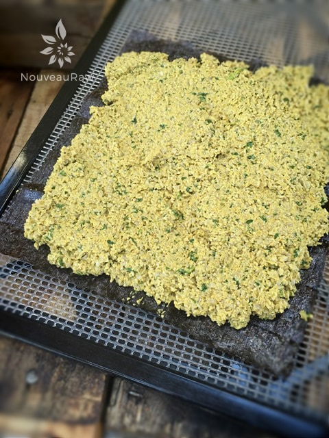
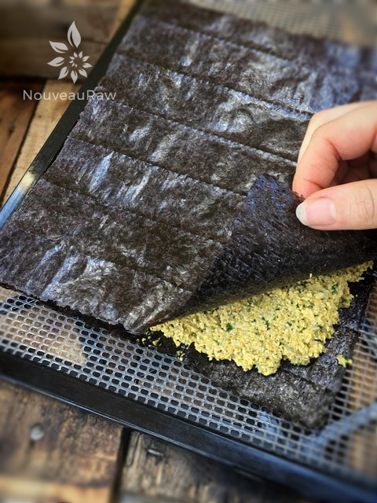

Thai Nori Crackers

~ raw, vegan, gluten-free, nut-free ~
These Thai Nori Crackers turned out to be a true winner with my husband. I should have known that it was a shoo-in because it was made with nori and my husband loves seaweed!
I don’t mind seaweed but I don’t carry the same love for them as my sweetie but even with that being said, I have to admit that these “crackers” tasted wonderful! And for those of you wondering… yes, you can taste a hint of the ocean in them. :)
The spices used in this recipe really shine through. I realize that the list used is long but well worth everything little scoop. Please don’t let them intimidate you. You will be pleased with the end result.
If you are not a fan of nori or of seaweeds you could make this recipe minus the nori and dehydrate the batter as crackers. Totally amazing as well.
Health Benefits of Nori
Nori is rich in iodine and iron and quite high in protein. It is also a good source of vitamin C, vitamin A, potassium, magnesium, and riboflavin (B2). Not only does it have all these nutritional riches, but it is also a low-fat food. I am so thankful that nutrient-rich foods can have so much wonderful flavor. I hope you enjoy this recipe. Blessings, amie sue
- 2 cups raw sunflower seeds, soaked
- 1/2 cup water
- 2 Tbsp lime juice
- 1 Tbsp maple syrup
- 2 Tbsp coconut amino
- 1 Tbsp cumin
- 1 Tbsp onion powder
- 2 tsp garlic powder
- 1 tsp ground ginger
- 1 tsp ground turmeric powder
- 1 tsp dried oregano
- 1/2 tsp Himalayan pink salt
- 1/2 tsp cayenne powder
- 1/2 tsp chili powder
- 1/2 cup fresh cilantro
- 1 Tbsp fresh basil
- 4 raw nori sheets
Preparation:
- In the food processor combine the; sunflower seeds, cilantro, water, lime juice, maple syrup, coconut amino, cumin, onion powder, garlic powder, ginger, turmeric, oregano, salt, cayenne, and chili powder. (shew, I think I got it all). Process to a paste-like texture.
- Add the basil and cilantro last so you can leave green flecks in the batter. Adds a nice splash of color in the end product.
- Spread paste approximately 1/4″ thick, evenly to each edge of a nori sheet.
- Place another nori sheet on top of the paste to make a ”sandwich”. Place a piece of plastic wrap on top and even it out with a rolling pin. Clean up the edges if any of the filling spilled out.
- Dehydrate at 145 degrees (F) for 1 hour, then reduce to 115 degrees (F) for 8 hours or until dry. This will all depend on how crisp you want these crackers/snacks to be.
- Cut into squares with a sharp knife.
- Store in an airtight container in the fridge if you leave some moisture in them for a week, maybe longer. You can always pop them back in the dehydrator to crisp up if need be.
- Stored in an airtight container on the counter for about 1 week if they are nice and dry.
Culinary Explanations:
- Why do I start the dehydrator at 145 degrees (F)? Click (here) to learn the reason behind this.
- When working with fresh ingredients it is important to taste test as you build a recipe. Learn why (here).
- Don’t own a dehydrator? Learn how to use your oven (here). I do however truly believe that it is a worthwhile investment. Click (here) to learn what I use.

Lay the nori sheet on the dehydrator sheet, shiny side down. Add 1 cup of filling and gently spread it to about 1/4″ from the edges.

Lay another sheet or nori on stop. Cover with plastic wraps and gently roll the cracker flat, turning it and rolling out to each edge. Pop in the dehydrator.
© AmieSue.com